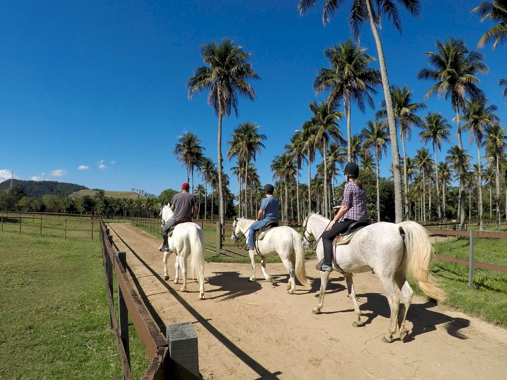

фото: haraspegasus.com.br1Haras Pégasus
Estrada dos Bandeirantes, 24.845, Vargem Grande · рядом с базой Flamengo (CT Ninho do Urubu)
R$ 80за 30 минут, вход на территорию бесплатный
- Часы
- вт–вс 8:00–17:00 (официальный сайт)
- От Barra
- 26 км / 30 мин от Jardim Oceânico · 20 км / 24 мин от BarraShopping
- Запись
- не нужна, живая очередь
- Возраст
- прогулка с 2 лет (ведут за повод), школа с 7 лет
- Телефон
- (21) 2428-1228, 2428-1687 · школа (21) 96488-5131
- Соцсети
- @haraspegasus
Конный центр на 250 000 м² зелени с манежами, конкурным полем, кантиной и бесплатной парковкой. Гости катаются по тропам внутри территории под присмотром гида; есть пони для детей и поездки в повозке (charrete). Одежда: джинсы и закрытая обувь.
Цена по источникам: R$ 80 за полчаса по отчёту гостя в TikTok (январь 2024), около R$ 65 по гиду по Vargem Grande (сентябрь 2025). На сайте конюшни цен нет. Школа Equipe Alejandra Fernandez: группы с 7 лет, первый пробный урок по данным блога Carioquice бесплатный, абонементы по запросу.
На территории запрещено фотографировать и нельзя с собаками: правила с официального сайта.
Источники: страница Passeios, Escola de Equitação, отчёт гостя, TikTok, гид по Vargem Grande, школа в Facebook.